xbar1 <- numeric(1000)
for (ind in 1:1000) {
xbar1[ind] <- sum(x[1:ind]) / ind
}R Practice Worksheets Sample Solutions
STA237: Probability, Statistics, and Data Analysis I
R Practice Worksheets Sample Solutions
Law of large numbers in action
Simulating 1,000 samples of \(X\sim N(0,1)\) and inspecting the distribution of the first 10, 100, and 1,000. I am fixing the x-axis limits to make the comparison more visual.
x <- rnorm(1000)
hist(x[1:10], xlim = c(-5,5), main = "First 10")
hist(x[1:100], xlim = c(-5,5), main = "First 100")
hist(x[1:1000], xlim = c(-5,5), main = "All 1,000")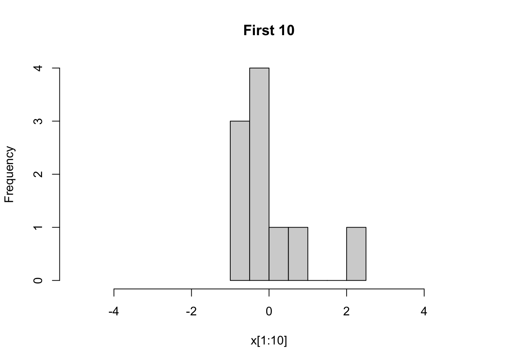
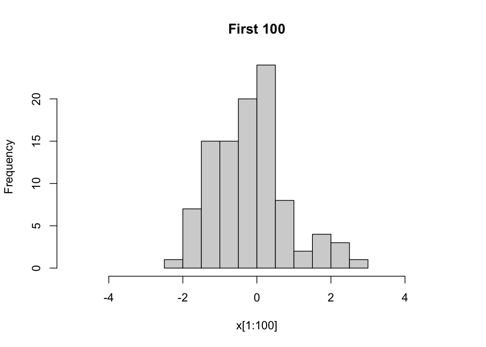
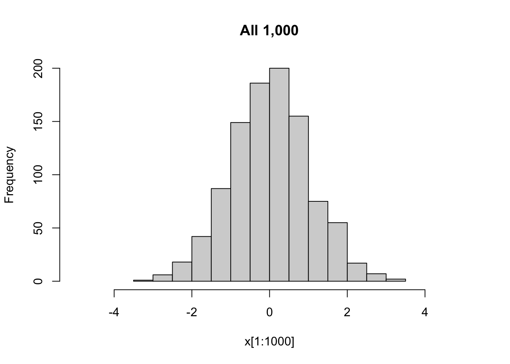
Using ggplot()…
library(ggplot2)
# I can use the same template for all three by defininit an empty canvas and adding the geoms later
plt_base <- ggplot() +
theme_classic() +
xlim(c(-5, 5))
plt_base + geom_histogram(aes(x[1:10]), bins = 30)
plt_base + geom_histogram(aes(x[1:100]), bins = 30)
plt_base + geom_histogram(aes(x[1:1000]), bins = 30)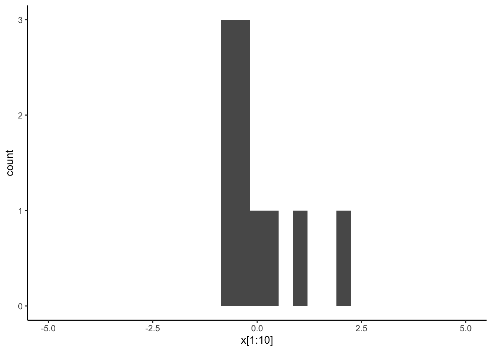
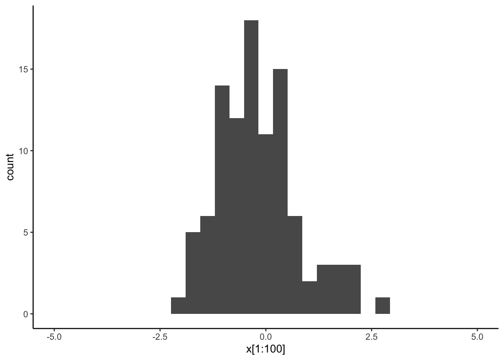
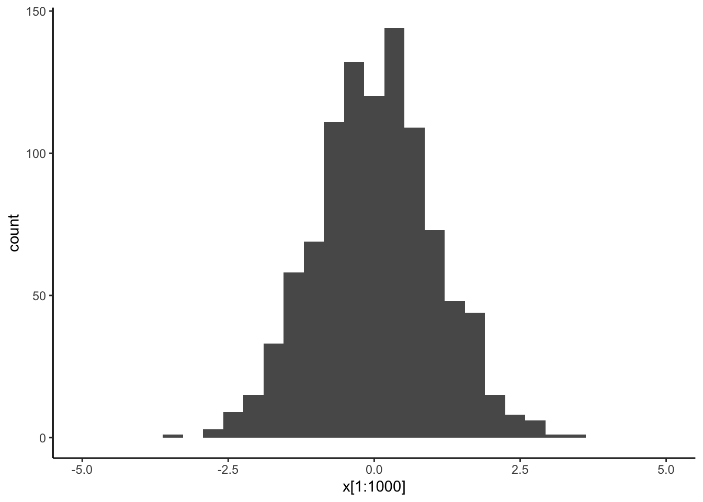
With more samples, it becomes more apparent that the centre of the distribution is at 0. We can also plot how the mean changes as you add more samples.
To compute cumulative means, we can use one of the following methods.
- use a loop:
- use
sapply():
xbar2 <- sapply(1:1000, function(ind) sum(x[1:ind]) / ind)- use
cumsum(), which computes cumulative sums given a vector:
xbar3 <- cumsum(x) / (1:1000)We can check that all results are indeed the same. all() returns TRUE when all elements of a given vector are TRUE.
all(xbar1 == xbar2)[1] TRUEall(xbar2 == xbar3)[1] TRUEWe can then plot the means. A horizontal dotted line at the population mean is drawn in red. In base R, the line is added with abline(h = <mean>). lty argument controls the line type.
plot(xbar1, xlab = "Xbar")
abline(h = 0, col = 2, lty = 3) 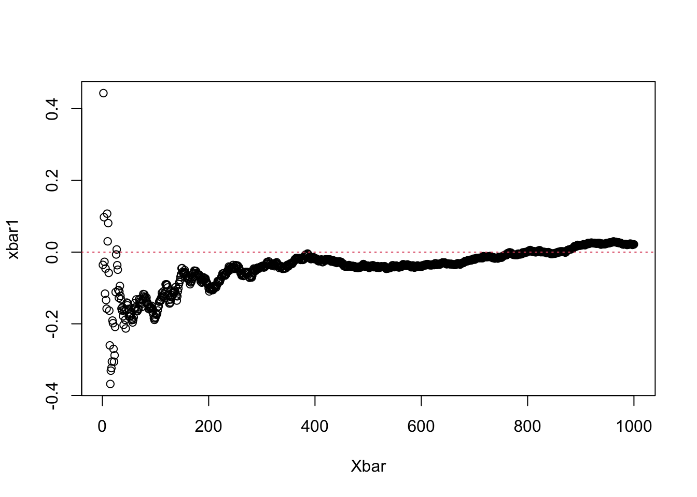
Using ggplot(), we can use geom_hline(). The argument names are self-explanatory.
ggplot() +
theme_classic() +
geom_point(aes(x = 1:1000, y = xbar1), alpha = 0.5) +
geom_hline(yintercept = 0, colour = 2, linetype = "dotted") +
labs(x = "Xbar") 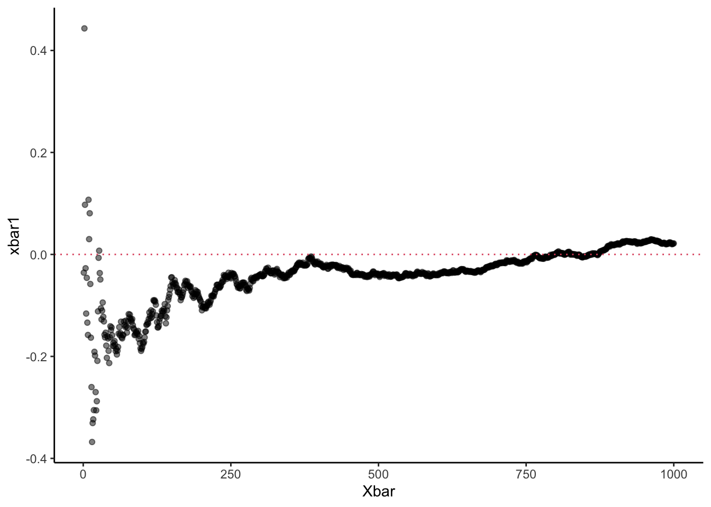
As a side, we can compare the resulting plot from a distribution which doesn’t have a mean defined. The Cauchy distribution, which is the ratio of two independent normal random variables with mean 0, is an example with no mean.
y <- rcauchy(1000)
ybar <- cumsum(y) / (1:1000)
ggplot() +
theme_classic() +
geom_point(aes(x = 1:1000, y = ybar), alpha = 0.5) +
geom_hline(yintercept = 0, colour = 2, linetype = "dotted") +
labs(x = "Xbar") 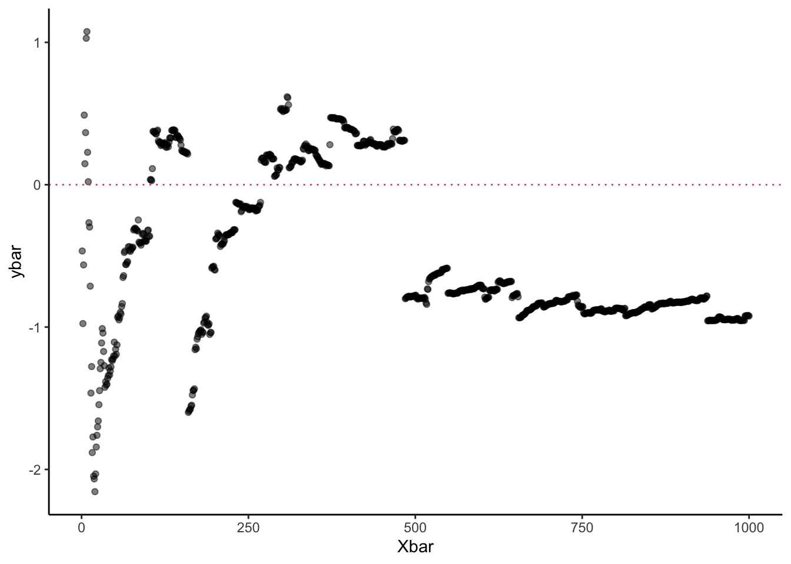
Sampling distributions
In the previous section, we looked at sampling distributions of individual \(X_i\)’s with a histogram. In the plots below, we will inspect sampling distributions of \(\overline{X}=\left.\sum_{i=1}^n X_i\right/ n\). For each random variable below, I will …
- generate 10,000 simulates of \(\overline{X}_{10}\), \(\overline{X}_{50}\), \(\overline{X}_{100}\), \(\overline{X}_{1000}\);
- store them in a data frame; and
- plot their density curves using
density()andgeom_density()).
To generates samples of \(\overline{X}_n\), I use mean(x) which is equivalent to sum(x) / length(x), and replicate() which helps replicate the sample generation.
Normal distribution
\[X\sim N\left(5, 5^2\right)\]
m <- 10000
# create a data frame with columns xbar10, xbar50, xbar100, and xbar1000
xbars <- data.frame(
xbar10 = replicate(m, mean(rnorm(10, mean = 5, sd = 5))),
xbar50 = replicate(m, mean(rnorm(50, mean = 5, sd = 5))),
xbar100 = replicate(m, mean(rnorm(100, mean = 5, sd = 5))),
xbar1000 = replicate(m, mean(rnorm(1000, mean = 5, sd = 5)))
)# using base R plot() and density()
plot(density(xbars$xbar10), main = "N(5,25)",
xlim = c(-2, 12), ylim = c(0, 2.5), col = 1)
lines(density(xbars$xbar50), col = 2)
lines(density(xbars$xbar100), col = 3)
lines(density(xbars$xbar1000), col = 4)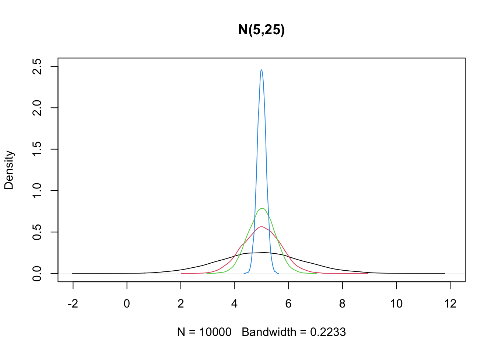
# using ggplot()
ggplot(xbars) +
theme_classic() +
geom_density(aes(x = xbar10, colour = "n = 10")) +
geom_density(aes(x = xbar50, colour = "n = 50")) +
geom_density(aes(x = xbar100, colour = "n = 100")) +
geom_density(aes(x = xbar1000, colour = "n = 1,000")) +
labs(title = "N(5,25)", colour = "Sample size", x = "Sample mean", y = "Density")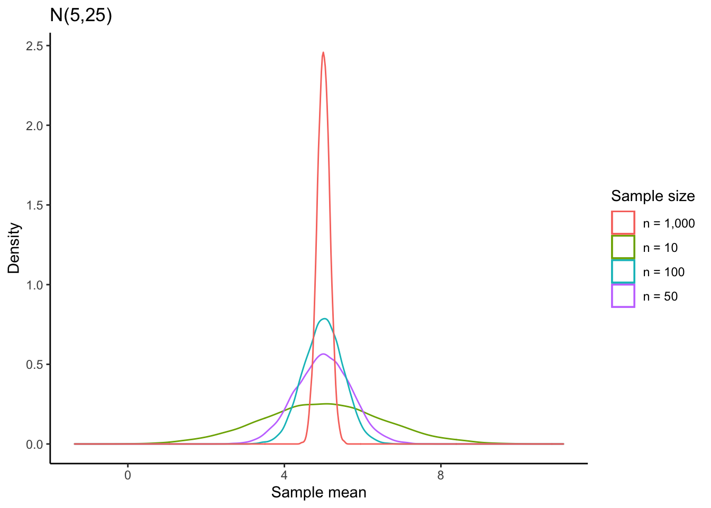
ggplot() generates a legend for the colours used. In base R, you need to create your own legend using legend() function which I didn’t show here. For the following distributions, I will only show the version using ggplot().
Exponential distribution
\[Y\sim \text{Exp}\left(\left.1\right/5\right)\]
ybars <- data.frame(
ybar10 = replicate(m, mean(rexp(10, rate = 1/5))),
ybar50 = replicate(m, mean(rexp(50, rate = 1/5))),
ybar100 = replicate(m, mean(rexp(100, rate = 1/5))),
ybar1000 = replicate(m, mean(rexp(1000, rate = 1/5)))
)ggplot(ybars) +
theme_classic() +
geom_density(aes(x = ybar10, colour = "n = 10")) +
geom_density(aes(x = ybar50, colour = "n = 50")) +
geom_density(aes(x = ybar100, colour = "n = 100")) +
geom_density(aes(x = ybar1000, colour = "n = 1,000")) +
labs(title = "Exp(1/5)", colour = "Sample size", x = "Sample mean", y = "Density")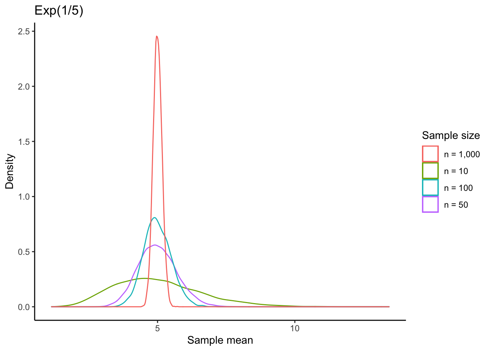
Binomial distribution
\[W\sim \text{Binom}\left(10, \left.1\right/10\right)\]
wbars <- data.frame(
wbar10 = replicate(m, mean(rbinom(10, size = 10, prob = 1/10))),
wbar50 = replicate(m, mean(rbinom(50, size = 10, prob = 1/10))),
wbar100 = replicate(m, mean(rbinom(100, size = 10, prob = 1/10))),
wbar1000 = replicate(m, mean(rbinom(1000, size = 10, prob = 1/10)))
)ggplot(wbars) +
theme_classic() +
geom_density(aes(x = wbar10, colour = "n = 10")) +
geom_density(aes(x = wbar50, colour = "n = 50")) +
geom_density(aes(x = wbar100, colour = "n = 100")) +
geom_density(aes(x = wbar1000, colour = "n = 1,000")) +
labs(title = "Binom(10, 1/20)", colour = "Sample size", x = "Sample mean", y = "Density")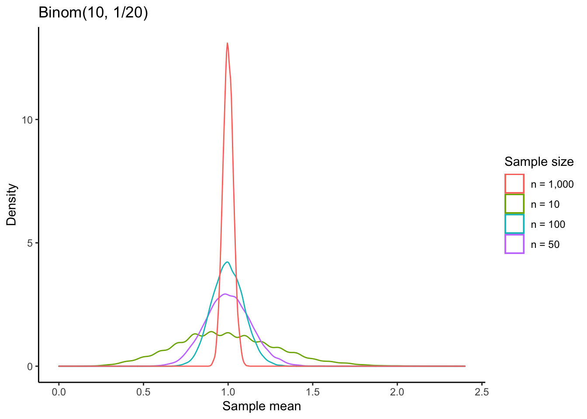
Poisson distribution
\[U\sim \text{Pois}\left(10\right)\]
ubars <- data.frame(
ubar10 = replicate(m, mean(rpois(10, lambda = 10))),
ubar50 = replicate(m, mean(rpois(50, lambda = 10))),
ubar100 = replicate(m, mean(rpois(100, lambda = 10))),
ubar1000 = replicate(m, mean(rpois(1000, lambda = 10)))
)ggplot(ubars) +
theme_classic() +
geom_density(aes(x = ubar10, colour = "n = 10")) +
geom_density(aes(x = ubar50, colour = "n = 50")) +
geom_density(aes(x = ubar100, colour = "n = 100")) +
geom_density(aes(x = ubar1000, colour = "n = 1,000")) +
labs(title = "Pois(10)", colour = "Sample size", x = "Sample mean", y = "Density")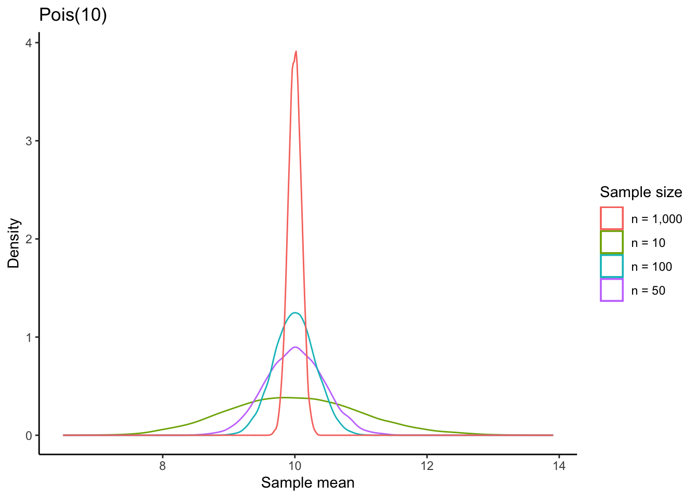
Example: Bike tires
Recall \(X\) and \(Y\) are random variables with a joint probability density function \(f\), \(W\sim\text{Ber}\left(1/2\right)\), and \(V\), \(X\), and \(Y\) have the same distributions.
\[f\left(x,y\right)=\begin{cases} K\left(x^2+y^2\right) & 20 \le x, y\le 50 \\ 0 & \text{otherwise} \end{cases}\]
where \(K=2\ 340\ 000^{-1}\). We also know that the marginal distribution of \(V\), \(X\), and \(Y\) is defined by probability density function
$$f(x)= \[\begin{cases}\frac{x^2}{78\ 000}+\frac{1}{60} & 20 \le x\le 50 \\ 0 &\text{otherwise}\end{cases}\]$$
or cumulative distribution function
\[F\left(a\right)=\begin{cases} 0 & x<20 \\ \frac{1}{234\ 000}a^3 + \frac{1}{60}a - \frac{43}{117} & 20 \le a \le 50 \\ 1 & x > 50. \end{cases}\]
To simulate samples of \(V\), we need \(F^{-1}\). Instead of deriving the function analytically, we will program the function \(F\) and use the definition
\[F^{-1}\left(t\right)=\min\left\{x:F\left(x\right)\ge t\right\}.\]
Defining the probability density function and the cumulative distribution function in R …
# pdf
pdfX <- function(x) {
ifelse(x <= 50 & x >= 20, (x^2 + 1300) / 78000, 0)
}
# cdf
cdfX <- function(a) {
ifelse(
a <= 20, 0, ifelse(
a > 50, 1,
(a^3 + 3900 * a - 43 *2000)/ 234000
)
)
}Generate 100,000 samples of \(U\sim \text{U}\left(0,1\right)\) and find the smallest value between 20 and 50 that returns \(F\left(u\right)\) for each \(u\) generated.
N <- 100000
U <- runif(N)
X <- numeric(N)
for (ind in 1:N) {
x_tmp <- 20 # start at 20
while (cdfX(x_tmp) < U[ind]) { # evaluate cdfX at current x_tmp value and compare to u
# if the evaluated cdf is smaller than u, increase x_tmp by a step
x_tmp <- x_tmp + 1 # assume the measurement precision is in whole number (step size of 1)
}
# the loop ends when the evaluated cdfX is at least u
# keep the x_tmp value
X[ind] <- x_tmp
}We now check whether the generated sample indeed follows the distribution of \(V\) by comparing the density histogram of the generated sample with the probability density function of \(V\).
library(ggplot2)
ggplot() +
theme_classic() +
geom_histogram(aes(x = X, y = after_stat(density)), binwidth = 1) +
geom_function(fun = pdfX, colour = 2, size = 2)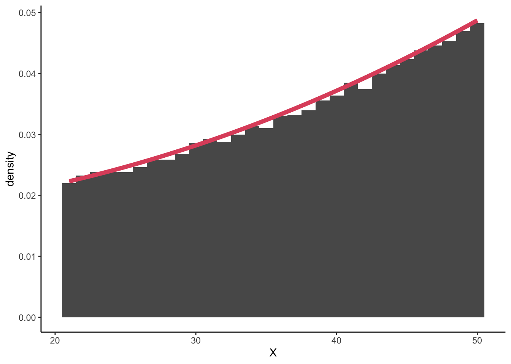
We see that they density histogram close follows the probability density function. We can confidently use the generated sample to estimate \(E(V)\) and \(P(V<40)\).
# E(V)
sum(X) / N[1] 37.51451# P(V < 40)
sum(X < 49) / N[1] 0.90479Computation with normal random variables
Suppose \(X_1\), \(X_2\), …, \(X_{25}\) are independent and follow
\[X_i\sim N(0,1)\]
Simulating a single \(X_1\)
Simulate 100 samples of \(X_1\) and
N <- 100
X1 <- rnorm(N)- plot their histogram;
hist(X1)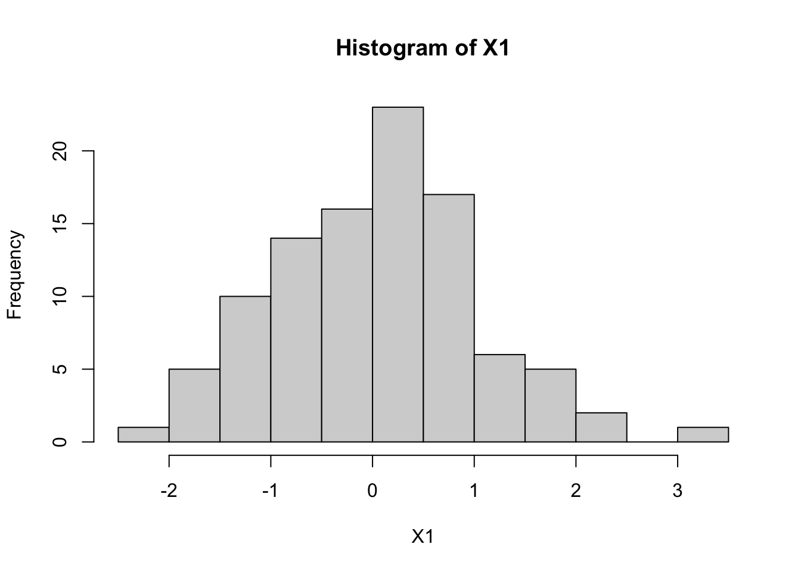
- compute their mean; and
sum(X1) / N[1] 0.07528819- compute their variance.
sum(X1^2) / N - (sum(X1) / N)^2[1] 1.007305Simulating \(3X_1 + 2\)
Simulate 100 samples of \(3X_1 + 2\) and
X1 <- rnorm(N)
X1transformed <- 3 * X1 + 2- plot their histogram;
hist(X1transformed)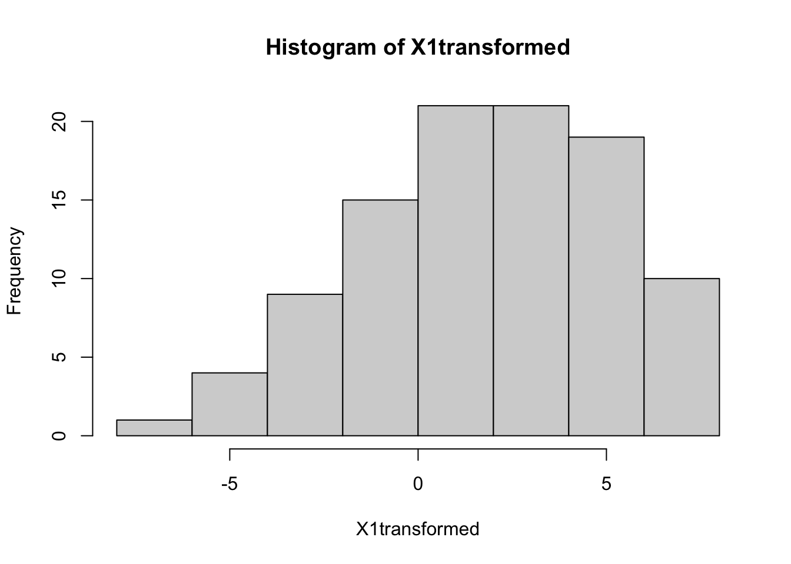
- compute their mean; and
sum(X1transformed) / N[1] 1.845729- compute their variance.
sum(X1transformed^2) / N - (sum(X1transformed) / N)^2[1] 10.36655Simulating \(\overline{X}_{25}\)
Simulate 100 samples of \(\overline{X}_{25}=\left.\sum_{i=1}^{25}X_i\right/25\) and plot their density histogram.
M <- 25
# generate 100 x 25 samples and place them in a 100 by 25 matrix
X <- matrix(rnorm(N * M), nrow = N)
# for each row from 1 to N (100), compute the mean
Xbar <- numeric(N)
for (ind in 1:N) {
Xbar[ind] <- sum(X[ind, ]) / M
}
# or equivalently ...
Xbar <- sapply(1:N, function(ind) sum(X[ind, ]) / M)We will use ggplot() and overlay the theoretical probability density function.
ggplot() +
theme_classic() +
geom_histogram(aes(x = Xbar, y = after_stat(density)), bins = 10) +
geom_function(fun = dnorm, args = list(sd = sqrt(1 / N)), colour = 2) +
geom_function(fun = dnorm, colour = 3)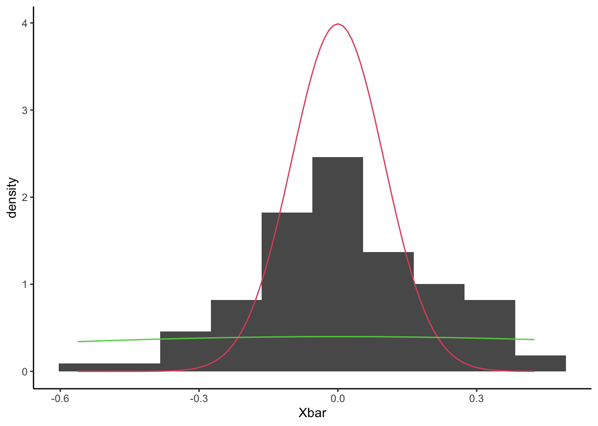
On the plot, the red density line is the theoretical density of \(\overline{X}_{25}\) and the green line is the density function of \(X_1\).
Example: Discrete random variables
Let \(U\) and \(V\) be two random variables with joint probability distribution defined by the following probability mass function.
a |
||||
|---|---|---|---|---|
| 0 | 1 | 2 | P(V=b) | |
| b | ||||
| 0 | 1/4 | 0 | 1/4 | 1/2 |
| 1 | 0 | 1/2 | 0 | 1/2 |
| P(U=a) | 1/4 | 1/2 | 1/4 | 1 |
Estimating \(E\left(UV\right)\) with simulation.
N <- 100000
UV <- numeric(N)
for (i in 1:N) {
# using the joint pmf to assign P(UV = x)
UV[i] <- sample(c(0, 1), 1, prob = c(1/4 + 1/4, 1/2))
}
sum(UV) / N[1] 0.49847With replace = TRUE, you don’t need a for loop.
UplusV <- sample(
c(0, 1, 2, 3), # all possible outcomes of U + V
N, # number of simulations
replace = TRUE, # because each sampling needs to be independent
prob = c(1/4, 0, 3/4, 0) # probabilities associated with each possible outcome
)
sum(UplusV) / N[1] 1.49356The following method is valid as well because we are computing expectation of a linear function of \(U\) and \(V\).
U <- sample(c(0, 1, 1, 2), N, replace = TRUE)
V <- sample(0:1, N, replace = TRUE)
sum(U + V) / N[1] 1.50127Example: Correlation coefficient
Estimate \(\rho\left(U,U^2\right)\) when \(U\sim\text{U}(0,a)\) for \(a=2\) and \(a=200\). In class, we computed the value to be \(\sqrt{15}/2\)= 0.9682458 for any \(a>0\)
sqrt(15) / 4[1] 0.9682458\[a=2\]
# Write your R codes here.
N <- 100000
a <- 2
U <- runif(N, max = a)
# Var(U) = E(U^2) - (E(U))^2
# Var(U^2) = E(U^4) - (E(U^2))^2
# Cov(U, U^2) = E(U^3) - E(U)E(U^2)
EU <- sum(U) / N
EU2 <- sum(U^2) / N # not EU^2; not sum(U)^2 / N
EU3 <- sum(U^3) / N
EU4 <- sum(U^4) / N
varU <- EU2 - EU^2
varU2 <- EU4 - EU2^2
covUU2 <- EU3 - EU * EU2
rhoUU2 <- covUU2 / sqrt(varU * varU2)
print(paste("E(U) =", EU, "; E(U^2) =", EU2,
"; E(U^3) =", EU3, "; E(U^4) = ", EU4))[1] "E(U) = 1.00033880425088 ; E(U^2) = 1.3352472367947 ; E(U^3) = 2.00445792438213 ; E(U^4) = 3.20879699078397"print(paste("Var(U) =", varU, "; Var(U^2) =", varU2,
"; Cov(U,U^2) =", covUU2))[1] "Var(U) = 0.334569513504623 ; Var(U^2) = 1.4259118074161 ; Cov(U,U^2) = 0.668758300147639"print(paste("roh(U, U^2) =", rhoUU2))[1] "roh(U, U^2) = 0.968232531105611"\[a=200\]
a <- 200
U <- runif(N, max = a)
EU <- sum(U) / N
EU2 <- sum(U^2) / N
EU3 <- sum(U^3) / N
EU4 <- sum(U^4) / N
varU <- EU2 - EU^2
varU2 <- EU4 - EU2^2
covUU2 <- EU3 - EU * EU2
rhoUU2 <- covUU2 / sqrt(varU * varU2)
print(paste("E(U) =", EU, "; E(U^2) =", EU2,
"; E(U^3) =", EU3, "; E(U^4) = ", EU4))[1] "E(U) = 99.9587885364532 ; E(U^2) = 13339.4891315653 ; E(U^3) = 2003391.88247507 ; E(U^4) = 320960788.334356"print(paste("Var(U) =", varU, "; Var(U^2) =", varU2,
"; Cov(U,U^2) =", covUU2))[1] "Var(U) = 3347.72972588995 ; Var(U^2) = 143018818.043207 ; Cov(U,U^2) = 669992.709188621"print(paste("roh(U, U^2) =", rhoUU2))[1] "roh(U, U^2) = 0.968274044165061"Example: Correlation and independence
Let \(X\sim N(0,1)\) and \(Y=X^2\). Are they correlated?
N <- 10000000
X <- rnorm(N, mean = 0, sd = 1)
EX <- sum(X) / N
EX2 <- sum(X^2) / N
EX3 <- sum(X^3) / N
covXY <- EX3 - EX * EX2
# note that because this is simulation, we may even get very small negative values
covXY[1] -0.0007400561print(paste("Cov(X, Y) =", round(covXY, 2)))[1] "Cov(X, Y) = 0"\[R\sim \text{U}(0,1)\quad \text{and}\quad \theta\sim\text{U}(0,\pi)\]
\[X=R\cos\left(\theta\right)\quad\text{and}\quad Y=R\sin\left(\theta\right)\]
Simulating \(R\) and \(\theta\) is simple.
N <- 1000
R_sim <- runif(N)
theta_sim <- runif(N, max = pi) # "pi" is provided by RWe can then use the simulated values to compute \(X\) and \(Y\).
# arithmetic functions are applied to each value of the vectors
# when the vector sizes match
X <- R_sim * cos(theta_sim)
Y <- R_sim * sin(theta_sim)We can then plot the values on a semi-circle using base R’s plot() and points() functions. To plot a semi-circle first create a sequence of values that range from 0 to \(\pi\). Use the values to compute coordinates \((x,y)\) of a semi-circle. To make the curve look smooth, use finely spaced values.
# create a sequence of value range from 0 to pi increasing by .01
circlei <- seq(from = 0, to = pi, by = .01)
plot(
cos(circlei), sin(circlei), # coordinates are (cos(i), sin(i))
type = "l", # connect the coordinates with a line (curve)
xlab = "x", ylab = "y" # axis labels
)
points(
X, Y, # add the points of (X,Y) on top of the semi-circle
pch = 19, # use filled-in dots
# set the colour parameter to use semi-transparent dots
col = rgb(red = 0, green = 0, blue = 0, alpha = 0.2)
) 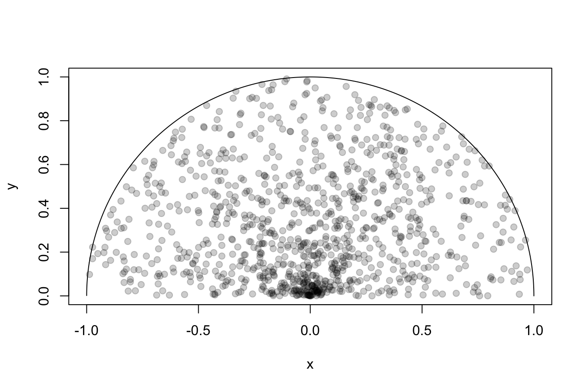
Alternatively, in ggplot() …
library(ggplot2)
ggplot() +
theme_classic() +
geom_line(aes(x = cos(circlei), y = sin(circlei))) + # draw the semi-circle
geom_point(aes(x = X, y = Y), alpha = .3) + # place semi-transparent dots
labs(x = "x", y = "y")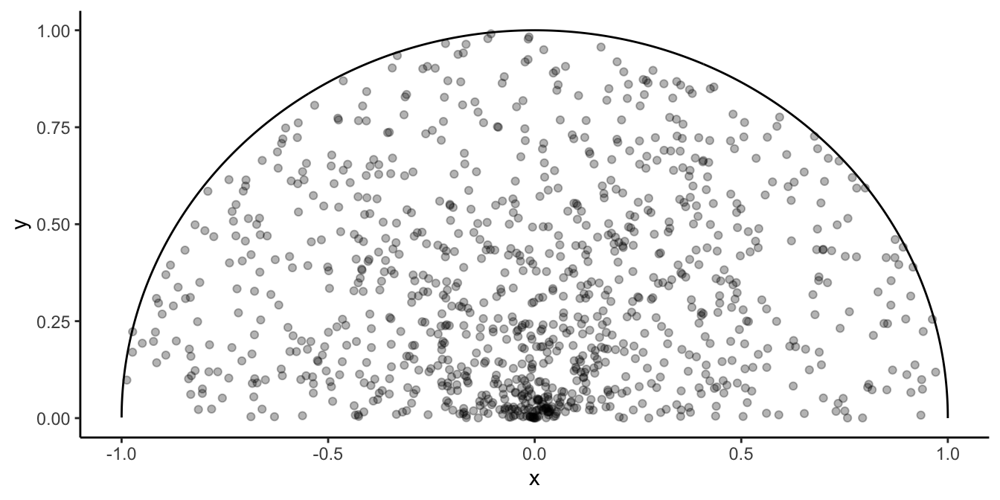
Note that the points are not uniformly distributed on the Cartesian plane If you wanted uniformly distributed points on the Cartesian plane, you need x and y coordinates to be independently uniform. Then, you can keep those that are in the semi-circle only.
X <- runif(N, min = -1)
Y <- runif(N)
insemicirlce <- (X^2 + Y^2) <= 1
ggplot() +
theme_classic() +
geom_line(aes(x = cos(circlei), y = sin(circlei))) + # draw the semi-circle
geom_point(aes(x = X[insemicirlce], y = Y[insemicirlce]), alpha = .3) + # place semi-transparent dots
labs(x = "x", y = "y")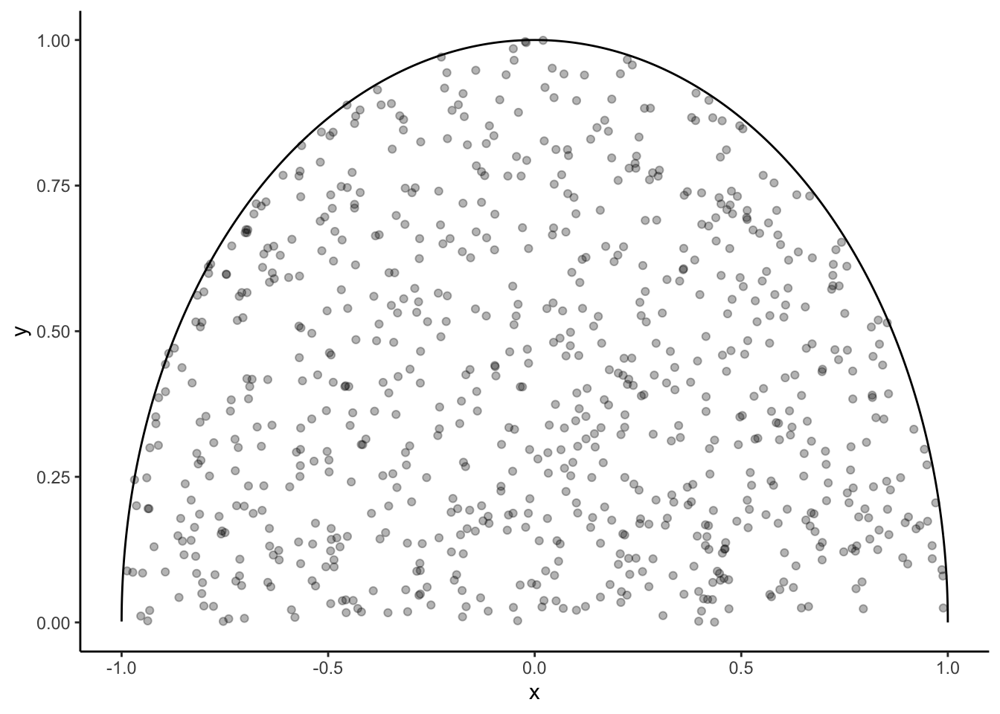
Note that this doesn’t guarantee the full 1000 samples. Only 77.5 are kept (which could be an issue if you wanted at least 1000 samples).
sum(insemicirlce)[1] 775Link to the worksheet.
Generating random numbers from \(U(0,1)\)
Generating \(X\) with probability mass function \(p\).
\[p\left(x\right) = \begin{cases} 1/2 & x= 0 \\ 1/3 & x = 1 \\ 1/6 & x = 3 \\ 0 & \text{otherwise.}\end{cases}\]
Using a for loop …
N <- 100000
set.seed(237) # fixing the random sequence
U <- runif(N) # generate samples from U(0,1)
X <- numeric(N)
for (ind in 1:N) {
if (U[ind] < 1/2) {
X[ind] <- 0
} else if (U[ind] < (1/2 + 1/3)) {
X[ind] <- 1
} else {
X[ind] <- 3
}
}
table(X) / NX
0 1 3
0.50362 0.33043 0.16595 Using ifelse() …
N <- 100000
set.seed(237) # fixing the random sequence
U <- runif(N) # generate samples from U(0,1)
X <- ifelse(
U < 1/2, # the condition
0, # value when Yes
ifelse(U < 1/2 + 1/3, 1, 3)
)
table(X) / NX
0 1 3
0.50362 0.33043 0.16595 Generating \(W\sim\text{Exp}(5)\) using its cumulative distribution function.
N <- 100000
set.seed(1)
# generate samples from U(0,1)
U <- runif(N)
W <- -log(1 - U) / 5 # inverse of F_WUsing rexp() …
N <- 100000
# generate samples from Exp(5) directly
set.seed(1)
W2 <- rexp(N, 5)Comparing the distributions of the generated values using hist().
hist(W, main = "Histogram of W generated from its cdf", xlab = "W")
hist(W2, main = "Histogram of W generated from rexp()", xlab = "W")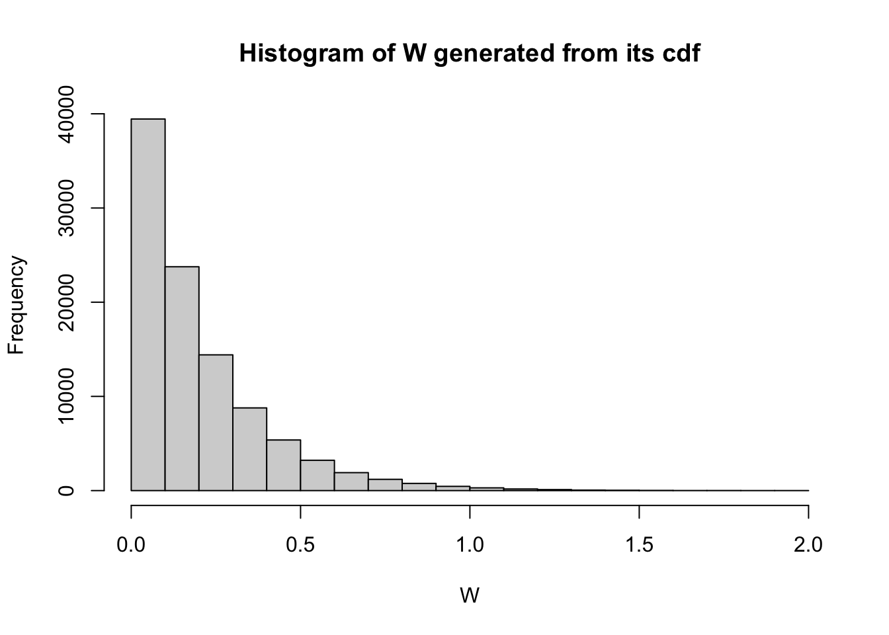
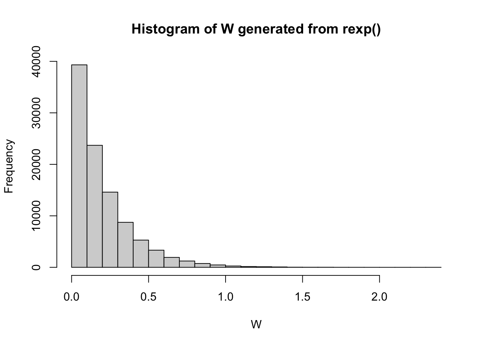
hist(W, main = "Density histogram of W generated from its cdf", xlab = "W", freq = FALSE)
hist(W2, main = "Density histogram of W generated from rexp()", xlab = "W", freq = FALSE)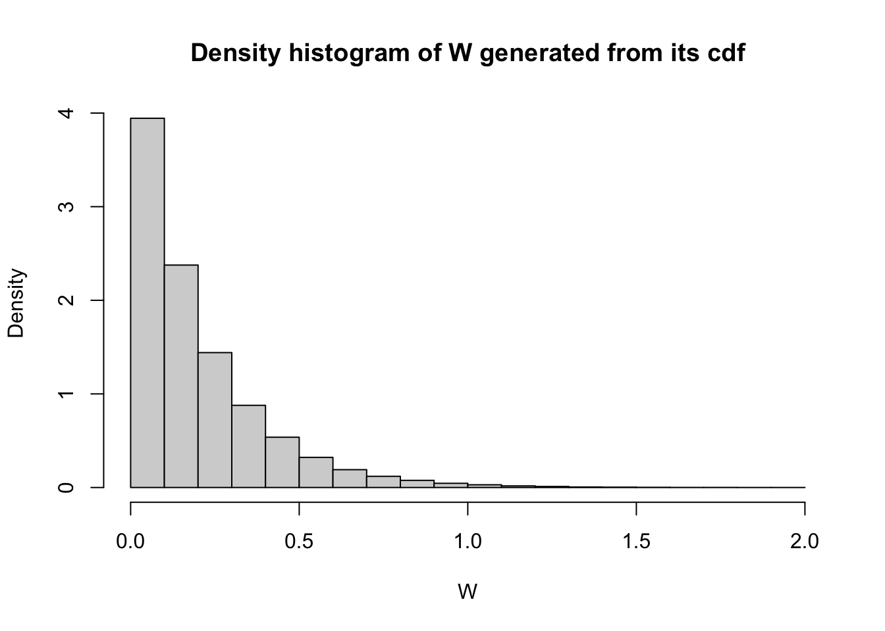
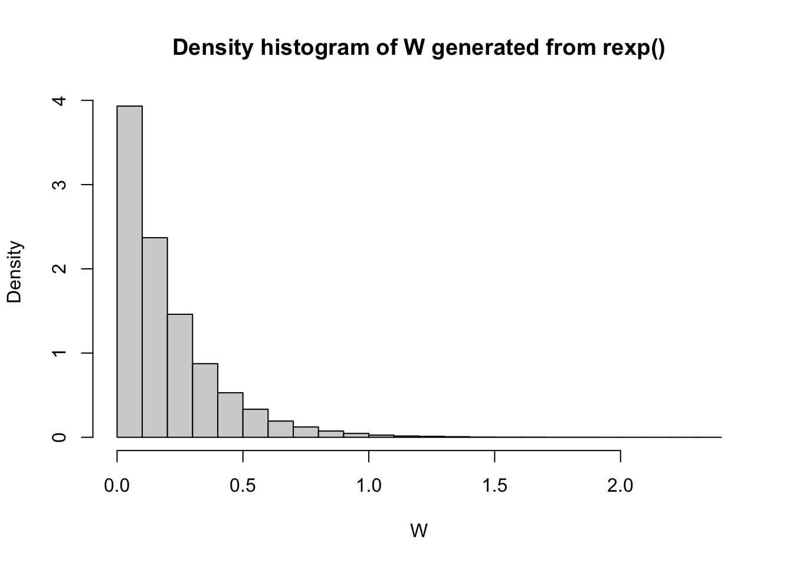
Constructing the same plots using ggplot() …
library(ggplot2)
ggplot() +
theme_classic() +
geom_histogram(aes(x = W, y = after_stat(density)),
breaks = seq(0, 2.2, 0.1)) +
labs(title = "Density histogram of W generated from its cdf" ,
y = "Density", x = "W")
ggplot() +
theme_classic() +
geom_histogram(aes(x = W2, y = after_stat(density)),
breaks = seq(0, 2.2, 0.1)) +
labs(title = "Density histogram of W generated from rexp()" ,
y = "Density", x = "W")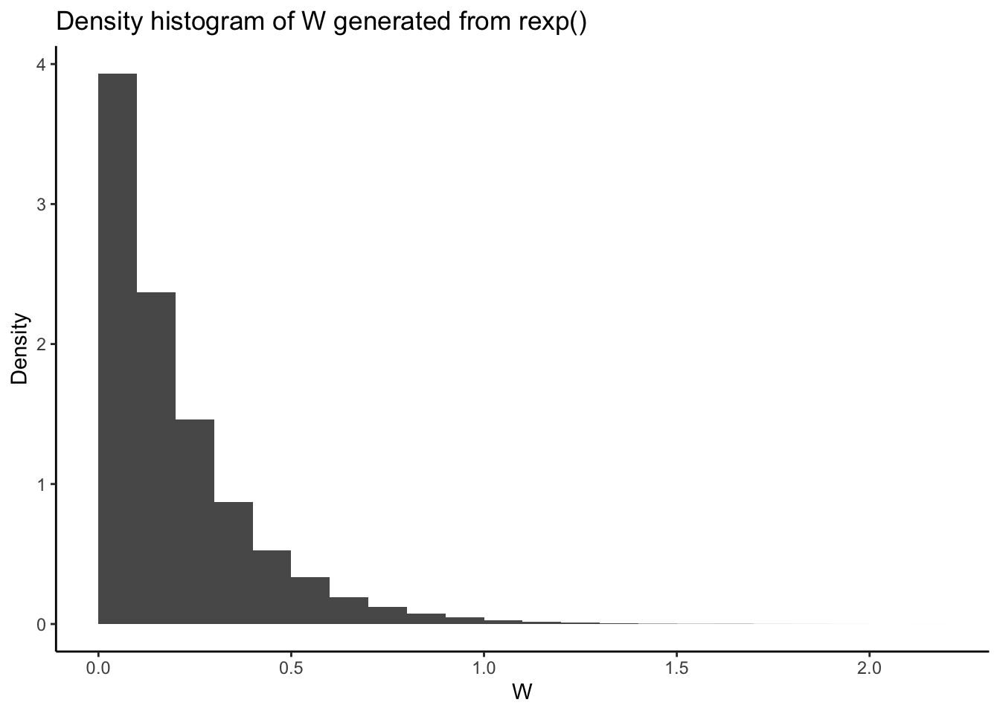
Simulating conditions and control flow
Defining a helper function for playing a hand.
# playing a hand in rock-paper-scissors
play_a_hand <- function() {
# rock is 1, paper is 2, scissors is 3
return(sample(1:3, size = 1))
}# 1. if tie -> lose 3 / 3 to the candies
# 2.1 else if you play a rock -> win or lose 1
# 2.2 else if you play a paper -> win or lose 2
# 2.3 else if you play a scissors -> win or lose 3
N <- 100000
Y <- numeric(N)
X <- numeric(N)
W <- numeric(N)
for (sim in 1:N) {
for (round in 1:5) {
# new hands in each round
you <- play_a_hand()
michael <- play_a_hand()
if (you == michael) { # tie
Y[sim] <- Y[sim] - 3
X[sim] <- X[sim] + 3 * 2 # from both you and Michael
} else { # not a tie
if (you == 1) {
Y[sim] <- Y[sim] + you * ifelse(michael == 3, 1, -1)
W[sim] <- W[sim] + ifelse(michael == 3, 1, 0) # add 1 if you win
}
if (you == 2) {
Y[sim] <- Y[sim] + you * ifelse(michael == 1, 1, -1)
W[sim] <- W[sim] + ifelse(michael == 1, 1, 0) # add 1 if you win
}
if (you == 3) {
Y[sim] <- Y[sim] + you * ifelse(michael == 2, 1, -1)
W[sim] <- W[sim] + ifelse(michael == 2, 1, 0) # add 1 if you win
}
}
}
}
print(paste("E(Y) =", sum(Y) / N))[1] "E(Y) = -4.98216"print(paste("P(X > 6) = ", sum(X > 6)/ N))[1] "P(X > 6) = 0.53837"print(paste("P(W <= 2) = ", sum(W <= 2) /N))[1] "P(W <= 2) = 0.78878"Constructing the histograms of simulated \(Y\), \(X\), and \(W\) values.
library(ggplot2)
ggplot() +
theme_minimal() +
geom_histogram(aes(x = Y), breaks = seq(-15, 15, 1)) +
labs(y = "", title = "Histogram of simulated Y")
ggplot() +
theme_minimal() +
geom_histogram(aes(x = X), breaks = seq(0, 30, 1)) +
labs(y = "", title = "Histogram of simulated X")
ggplot() +
theme_minimal() +
geom_histogram(aes(x = W), breaks = seq(0, 5, 1)) +
labs(y = "", title = "Histogram of simulated W")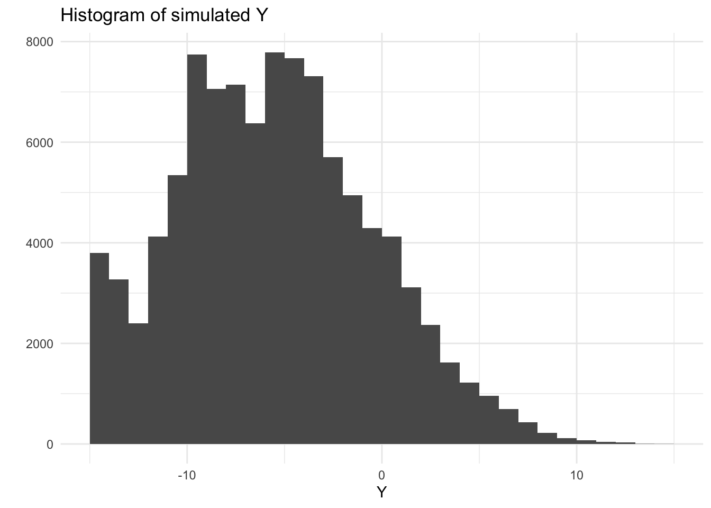
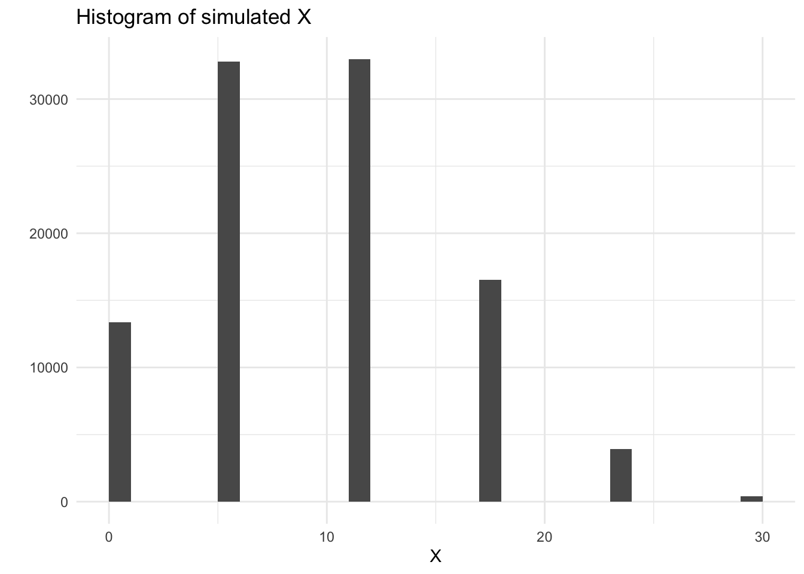
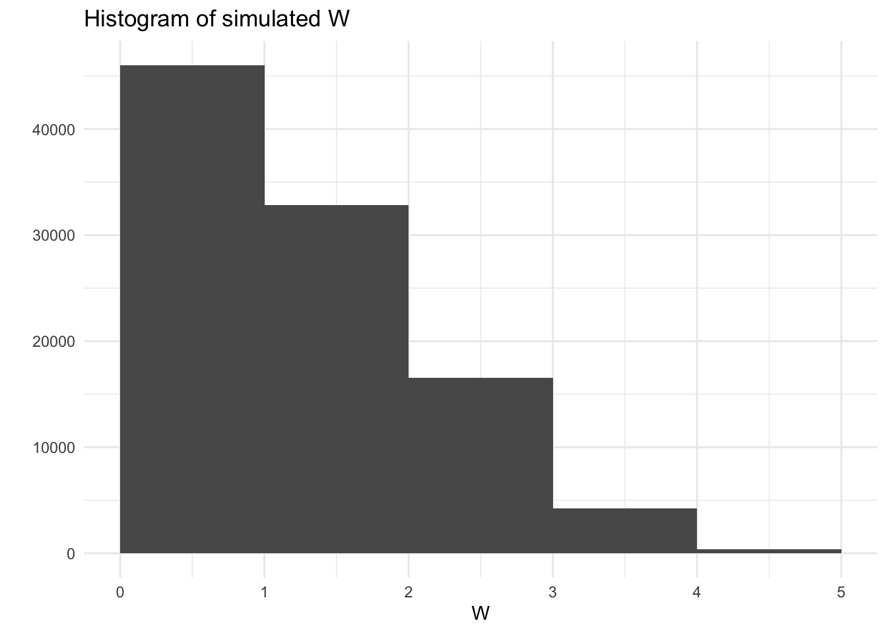
Link to the worksheet.
Computing expectation and variance
Estimating \(E(N)\) where \(N\sim \text{Bin}(20, 0.4)\).
M <- 100000 # number of simulations
# generate M random samples of N
# a. dxxx b. pxxx c. rxxx d. qxxx
# rxxx -> generate random samples
samp <- rbinom(M, 20, .4) # Binom(20, 0.4)
sum(samp) / M # the weighted average estimates the expecation[1] 8.00819Estimating \(\text{Var}(N)\).
M <- 100000 # number of simulations
samp <- rbinom(M, 20, .4) # simulate M x Binom(20, 0.4)
EN2 <- sum(samp^2) / M # E[N^2]; samp^2 takes care of ^2 for each element
EN <- sum(samp) / M
print("Estimated expected value of N^2:")[1] "Estimated expected value of N^2:"EN2[1] 68.82425print("Estimated expected value of N:")[1] "Estimated expected value of N:"EN[1] 8.00107print("Estimated variance of N:")[1] "Estimated variance of N:"EN2 - EN^2[1] 4.807129Working with R’s geometric distribution
Remember that R’s version is based on the number of failures before the first success whereas the textbook version is the number trials until the first success.
y <- 1:20 # values of interest
# pmf -> dxxxx
# geometric -> dgeom
pmfY <- dgeom(y - 1, .3)
# cdf -> pxxxx
# geometric -> pgeom
cdfY <- pgeom(y - 1, .3)
# plotting pmf: using base R
# plot(y, pmfY, xlab = "y", ylab = "pmf of Y")
# plotting pmf: using ggplot2
library(ggplot2)
# specify with `mapping = ` that you are not
# passing a data table as your first argument
ggplot(mapping = aes(x = y, y = pmfY)) +
theme_minimal() +
geom_segment(aes(xend = y, yend = 0)) +
geom_point() +
labs(x = "y", y = "pmf of Y")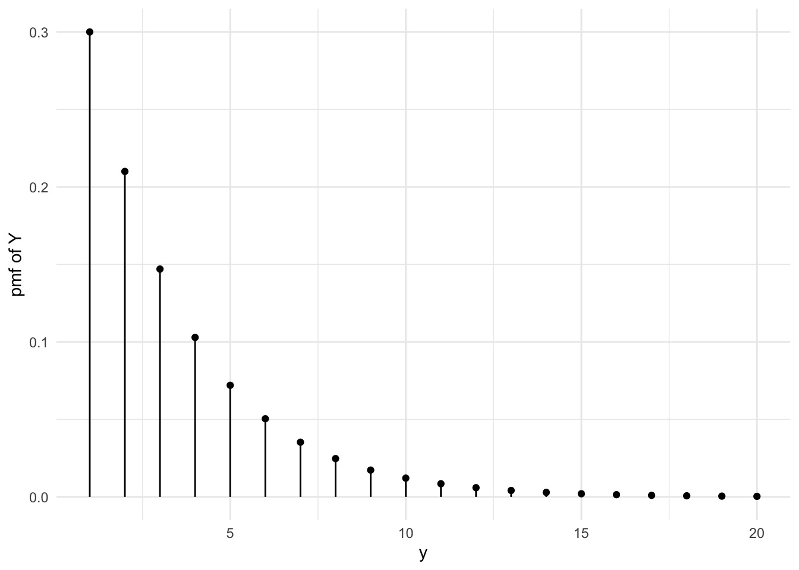
Link to the worksheet.
Computing probabilities for normal random variables
For \(X\sim N(1, 4^2)\), computing \(P(X>2)\).
# using built-in functions
pnorm((-.5 - 1) / 4) # using transformation to Z[1] 0.3538302pnorm(-.5, 1, 4) # using the built-in functions parameters to specify the distribution[1] 0.3538302# P(X > 2)
1 - pnorm(2, 1, 4)[1] 0.4012937Computing 25th percentile.
qnorm(0.25, 1, 4) # q.25 of X directly[1] -1.697959qnorm(0.25) * 4 + 1 # q.25 of Z then transform[1] -1.697959Computing probabilities directly
Computing \(f(2)\), where \(f(x)=\lambda e^{-\lambda x}\) for \(\lambda = 1\).
lambda <- 1
x <- 2
lambda * exp(1)^(-lambda * x) # exp(1) = e[1] 0.1353353lambda * exp(-lambda * x) # exp(x) = e^x[1] 0.1353353dexp(x, lambda) # R's built-in family of functions for common distributions[1] 0.1353353# you can also define your own function
pdf_of_exp <- function(a, rate) {
term1 <- rate
term2 <- exp(-rate * a)
term1 * term2
}
pdf_of_exp(x, lambda)[1] 0.1353353Computing \(F(2)\).
# custom function
cdf_of_exp <- function(a, rate) {
1 - exp(-rate * a)
}
cdf_of_exp(2, 1)[1] 0.8646647# built-in function
pexp(2, 1)[1] 0.8646647Link to the worksheet.
Example: 10 rounds of rock paper scissors
Computing pmf of a binomial random variable.
pmfN <- dbinom(0:10, 10, 1/3) # compute for values 0, 1, 2, ..., 10
binomN <- data.frame(n = 0:10, pmf = pmfN) # place them in a table format
binomN n pmf
1 0 1.734153e-02
2 1 8.670765e-02
3 2 1.950922e-01
4 3 2.601229e-01
5 4 2.276076e-01
6 5 1.365645e-01
7 6 5.690190e-02
8 7 1.625768e-02
9 8 3.048316e-03
10 9 3.387018e-04
11 10 1.693509e-05Computing the cdf of a binomial random variable.
cdfN <- pbinom(0:10, 10, 1/3)
binomN["cdf"] <- cdfN # add a new column to an existing table
binomN n pmf cdf
1 0 1.734153e-02 0.01734153
2 1 8.670765e-02 0.10404918
3 2 1.950922e-01 0.29914139
4 3 2.601229e-01 0.55926434
5 4 2.276076e-01 0.78687192
6 5 1.365645e-01 0.92343647
7 6 5.690190e-02 0.98033836
8 7 1.625768e-02 0.99659605
9 8 3.048316e-03 0.99964436
10 9 3.387018e-04 0.99998306
11 10 1.693509e-05 1.00000000(Optional) Plotting using ggplot.
library(ggplot2) # load the library
# loading the library allows the user to access
# the family of functions provided by the library
ggplot(binomN, aes(x = n)) + # initialize a ggplot canvas with the data and set x axis to column `n`
geom_point(aes(y = pmf)) + # add points with y axis mapped to the pmf
geom_segment(aes(y = 0, yend = pmf, xend = n)) + # draw lines from the points to y = 0
theme_classic() + # controls aesthetics; you can also try theme_minimal(), theme_void(), etc.
labs(
title = "Probability mass function of N",
y = expression(p[N]) # allows mathematical expressions
)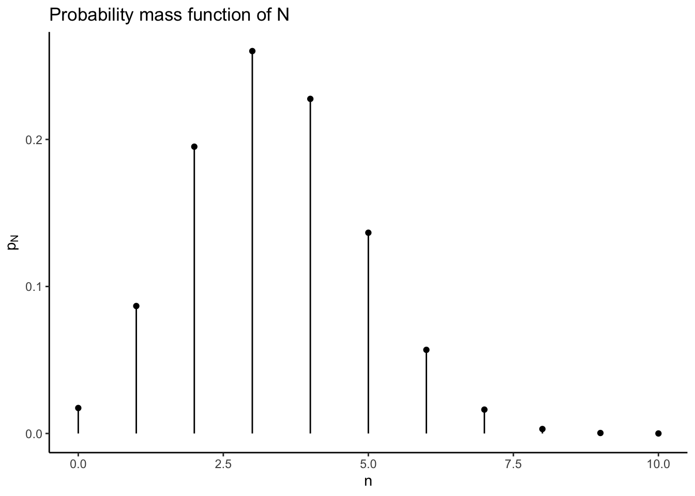
(Optional) Plotting the cdf. This requires a more advanced level understading of R and tidyverse family of packages than I expect from the class.
library(tidyverse)
binomN <- binomN %>%
add_row(n = -1, pmf = 0, cdf = 0, .before = 1) %>%
add_row(n = 11, pmf = 0, cdf = 1)
ggplot(binomN, aes(x = n, y = cdf)) +
theme_classic() +
geom_segment(aes(xend = lead(n), yend = cdf)) +
geom_point(data = filter(binomN, n > -1, n < 11)) +
labs(y = expression(F[N]), title = "Cumulative distribution function of N") +
scale_y_continuous(limits = c(0, 1)) +
scale_x_continuous(limits = c(-1, 11), breaks = seq(0, 10, 5))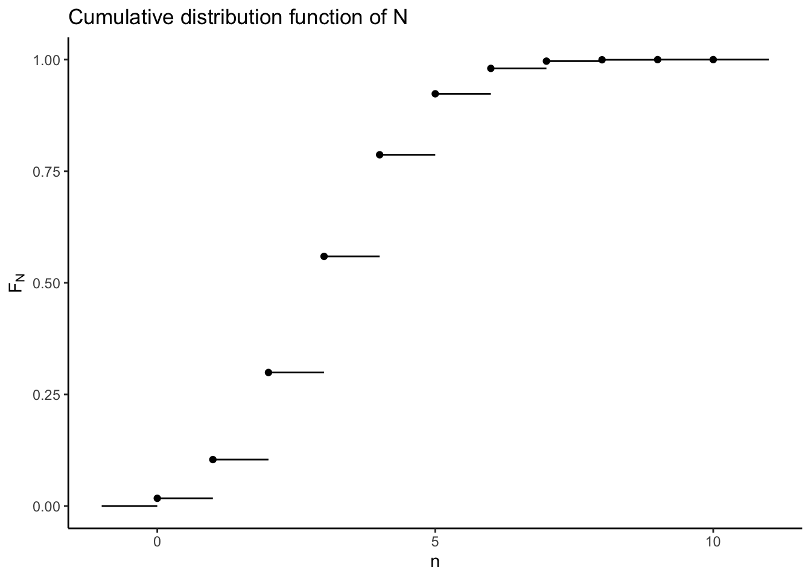
Poisson and binomial distributions
library(ggplot2)
x <- 0:10
df <- data.frame(
x = x,
bin30 = dbinom(x, size = 30, prob = 0.1),
bin100 = dbinom(x, size = 100, prob = .03),
bin300 = dbinom(x, size = 300, prob = .01),
pois = dpois(x, 3)
)
ggplot(df, aes(x = x)) +
theme_minimal() +
# adding pch within mapping creates a legend based on point type
geom_point(aes(y = bin30, pch = "Bin(30, 0.1)"), alpha = 0.5, size = 3) +
geom_point(aes(y = bin100, pch = "Bin(100, 0.03)"), alpha = 0.5, size = 3) +
geom_point(aes(y = bin300, pch = "Bin(300, 0.01)"), alpha = 0.5, size = 3) +
geom_point(aes(y = pois, pch = "Pois(3)"), alpha = 0.5, size = 3) +
labs(y = "P(x)", pch = "Distribution")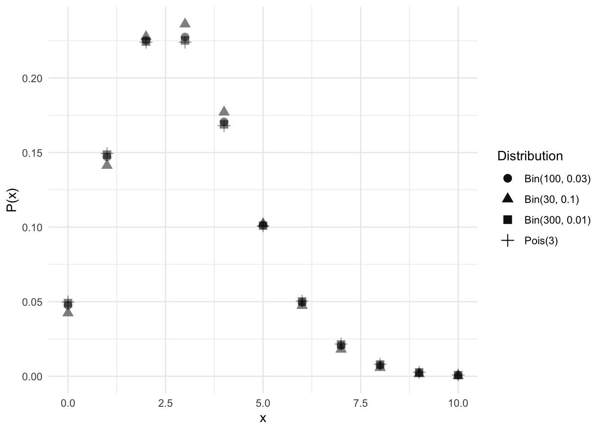
Simulating a distribution
Simulate throwing a die until the sum is greater than 6 using replicate() …
N <- 10^6
# simulation approach 1
res1 <- replicate(
N, {
x <- 0; s <- 0
while(s < 7) { # loop while the sum is less than 7
s <- s + sample(1:6, 1)
x <- x + 1 # coun the number of rolls
}
x
}
)
cat('F(1)=', sum(res1 <= 1)/N)F(1)= 0cat('F(2)=', sum(res1 <= 2)/N)F(2)= 0.58334cat('F(7)=', sum(res1 <= 7)/N)F(7)= 1(optional) … and using a matrix. The level of programming complexity demonstrated here is beyond what I expect from the class.
s <- matrix(
sample(1:6, N*7, replace = TRUE),
ncol = 7
) # simulate 7 rolls each time
cumulative_sums <- apply(s, 1, cumsum) # get cumulative sum for each simulation
# check which is the first roll that exceeds 6
res2 <- apply(cumulative_sums, 2, function(x) min(which(x > 6)))
cat('F(1)=', sum(res2 <= 1)/N)F(1)= 0cat('F(2)=', sum(res2 <= 2)/N)F(2)= 0.583171cat('F(7)=', sum(res2 <= 7)/N)F(7)= 1Link to the worksheet.
Simulating conditional events
Simulating flu with different probabilities based on vaccination status.
# want: P(flu)
N <- 10^6
# the probabilities
pvac <- 0.35
pflu_vac <- 0.03
pflu_no_vac <- 0.12
# simulate vaccinated population with TRUE / FALSE otherwise
sim_vac <- sample(
x = c(T, F), size = N, replace = TRUE,
prob = c(pvac, 1 - pvac)
) # we can pass the probabilities manually
sim_flu <- logical(N) # placeholder of T/F
for (ind in 1:N) {
if (sim_vac[ind]) { # vaccinated
sim_flu[ind] <- sample(
x = c(T, F), size = 1,
# probabilities for vaccinated
prob = c(pflu_vac, 1 - pflu_vac)
)
} else { # not vaccinated
sim_flu[ind] <- sample(
x = c(T, F), size = 1,
# probabilities for non-vaccinated
prob = c(pflu_no_vac, 1 - pflu_no_vac)
)
}
}
sum(sim_flu) / N[1] 0.088399Link to the worksheet.
Example: Rolling a fair die
Simulating a single role.
sample(x = 1:6, size = 1)[1] 1Simulating \(N\) times using a for loop …
N <- 10
draw <- numeric(N) # a placeholder
for (i in 1:N) {
draw[i] <- sample(1:6, 1) # place simulations inside the placeholder
}
draw [1] 3 6 3 2 6 6 4 6 4 6… using the built-in handling of vectors.
N <- 15
draw <- sample(1:6, N, replace = TRUE)
draw [1] 2 1 5 6 6 3 5 4 3 3 3 5 2 5 3Simulating \(P(A)\).
N <- 10^6 # one million times
draw <- sample(1:6, N, replace = TRUE)
# check the remainder after dividing by 2 is 0, i.e., is even
# the checking is done for all simulated individual values
is_even <- draw %% 2 == 0
sum(is_even) / N # sum() counts TRUE as 1 and FALSE as 0[1] 0.501403Simulating \(P(B)\).
# we will use the same samples (draw) and N from above
# (may not be available on the worksheet)
is_less_than_3 <- draw < 3
sum(is_less_than_3) / N[1] 0.332895Multiple experiments
Simulating rolling a fair die twice.
N <- 10^6
# replicate outputs result of `n` repetitions of
# the operations described in `expr`
# it allows replicating multiple lines of codes
C <- replicate(
n = N, expr = {
# roll a die twice
roll <- sample(1:6, size = 2, replace = TRUE)
# output whether the sum is greater than or equal to 8
sum(roll) >= 8
})
sum(C)/N[1] 0.415802The simulated values may be, in fact, highly likely to be, different each time you run the code. This is expected as R samples from a random or unpredictable set of values each time it samples.
© 2022. Michael J. Moon. University of Toronto.
Sharing, posting, selling, or using this material outside of your personal use in this course is NOT permitted under any circumstances.